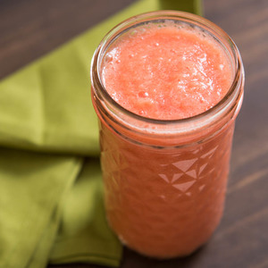

{% extends 'base_2.html' %} {% block title %} Bookmarks {% endblock %} {%
block styles%}
<!-- <link rel="stylesheet" href="../static/styles/bootstrap.min.css" /> -->
<link rel="stylesheet" href="../static/styles/bookmarks.css" />

{% endblock%} {% block script %}
<script
  type="module"
  src="https://unpkg.com/ionicons@7.1.0/dist/ionicons/ionicons.esm.js"
  async
></script>
<script
  nomodule
  src="https://unpkg.com/ionicons@7.1.0/dist/ionicons/ionicons.js"
  async
></script>
<script
  src="https://code.jquery.com/jquery-3.7.1.min.js"
  integrity="sha256-/JqT3SQfawRcv/BIHPThkBvs0OEvtFFmqPF/lYI/Cxo="
  crossorigin="anonymous"
></script>
<script src="../static/scripts/showModalBookmark.js" async></script>
<script src="../static/scripts/printThis.js" defer></script>
{% endblock %} {% block main %}

<!-- ----------------Modal-------------------	 -->

<div
  class="modal fade"
  id="staticBackdrop"
  data-bs-keyboard="false"
  tabindex="-1"
  aria-labelledby="staticBackdropLabel"
  aria-hidden="true"
>
  <div class="modal-dialog modal-scrollable">
    <div id="modal-section" class="modal-content">
      <div class="main-logo">
        <h1>DishCovery</h1>
      </div>
      <div class="modal-sections">
        <div class="left-section">
          
          <div class="recipe-info">
            <div class="info">
              <ion-icon name="timer-outline"></ion-icon>
              <span class="info-span totalTime"></span> min.
            </div>
            <div class="info">
              <ion-icon name="flame"></ion-icon>
              <span class="info-span calories"></span> cal.
            </div>
          </div>

          <div class="click-view-content">
            <a href="" class="click-view fulldetails" target="_blank">
              <div class="click-view-text">View Full Recipe</div>
            </a>
          </div>
          <div class="click-view-content">
            <div class="click-view-text" id="pdf-btn">
                Download as PDF
            </div>
          </div>

          <div class="show-tags" id="showTags">
            Show Tags <ion-icon name="chevron-up-outline"></ion-icon>
          </div>
          <div class="tags-content healthLabels" id="tagsContent"></div>
        </div>
        <div class="right-section">
          <div class="recipe-title label"></div>
          <div class="recipe-author">
            by
            <div class="author source"></div>
          </div>
          <h3 class="heading-secondary">Ingredients:</h3>
          <div class="ingredients-section">
            <div class="ingredient ingredientLines"></div>
          </div>
        </div>
      </div>
      <div class="modale-footer">
        <!-- <button type="button" class="btn btn-secondary" data-bs-dismiss="modal">Close</button> -->
        <button id="bookmark-btn" type="button" class="btn btn-primary btn-book">Remove Bookmark</button>
      </div>
    </div>
  </div>
</div>

<!-- ----------------Modal-------------------	 -->

<div class="container section-container">
  <main class="main container">
    <div class="row gx-5 gy-5 justify-content-center">
      {% for bookmark in bookmark_details %}
      <div class="col-12 col-sm-6 col-md-4 col-lg-3 col-custom card-container">
        <div id="{{ bookmark.id }}" class="card shadow" style="width: 18rem">
          <a
            class="recipe-link"
            href=""
            style="text-decoration: none; color: #000"
            data-bs-toggle="modal"
            data-bs-target="#staticBackdrop"
          >
            
            <div class="card-body recipe-card">
              <h5 class="card-title">{{ bookmark.label }}</h5>
            </div>
          </a>
        </div>
      </div>
      {% endfor %}
    </div>
  </main>
</div>

{% endblock %}
